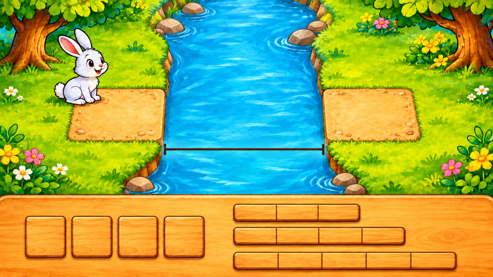
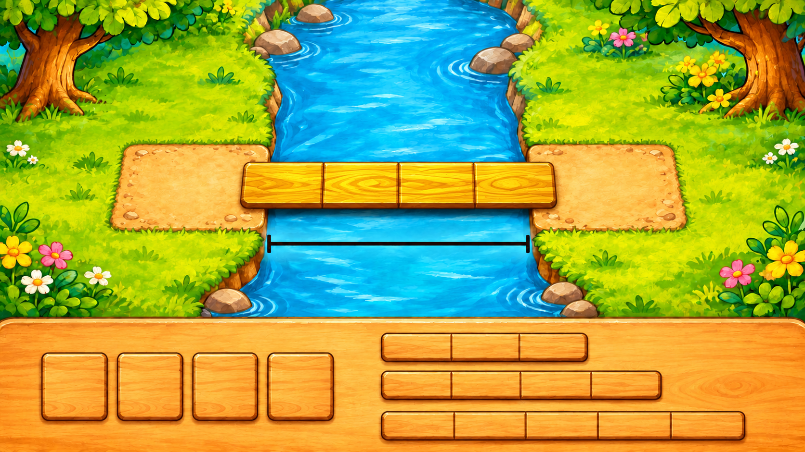

MEASURE • MATCH • CROSS
Measure with equal blocks, then choose the plank that fits the creek exactly.


Place the blocks end to end across the measuring line.
BUILD A BRIDGE
There is no timer or penalty. Use Undo whenever you want to change the measurement.